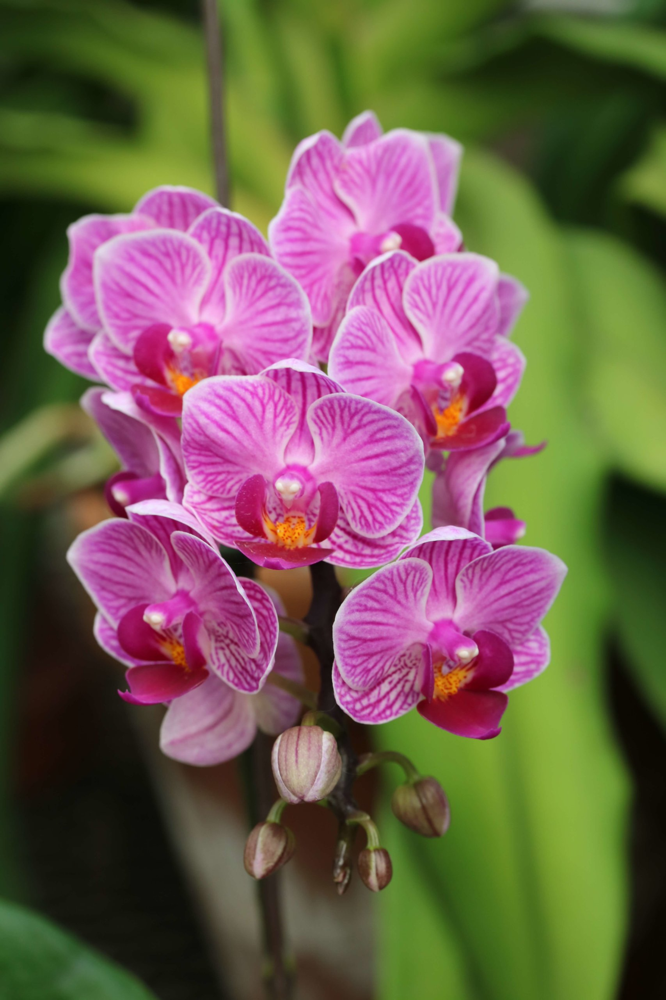

Fun with Images, Lists, and Links
Places I would like to visit
- Italy
- Greece
- Jamaica
- Australia
- Spain
List of Keyboard Shortcuts
- Ctrl and a - Selects the entire document
- Ctrl and x - Deletes the selected area and copies to the clipboard
- Ctrl and c - Copies the selected area to the clipboard
- Ctrl and v - Pastes from the clipboard
- Ctrl and s - Saves the document
- Ctrl and z - undo
- Ctrl and y - redo
- Ctrl and f - find, search the page
I think the four most important keyboard shortcuts or the ones I use the most are Ctrl x, ctrl c, ctrl v, and ctrl f. These save me a lot of time when I'm taking notes from a textbook or doing anything school-related. For example, when I'm writing a paper and I want to move a paragraph I would cut it with ctrl x and then paste it with ctrl v. Ctrl f has definetly saved me an enormous amount of time and is very useful when you don't want to spend time looking for something.
List of Useful USC Links:
- Blackboard
- USC
- MYSC
- My Major
- Go to My Places
- Go to Keyboard Shortcuts
- Go to USC Useful Links
Orchid :)
